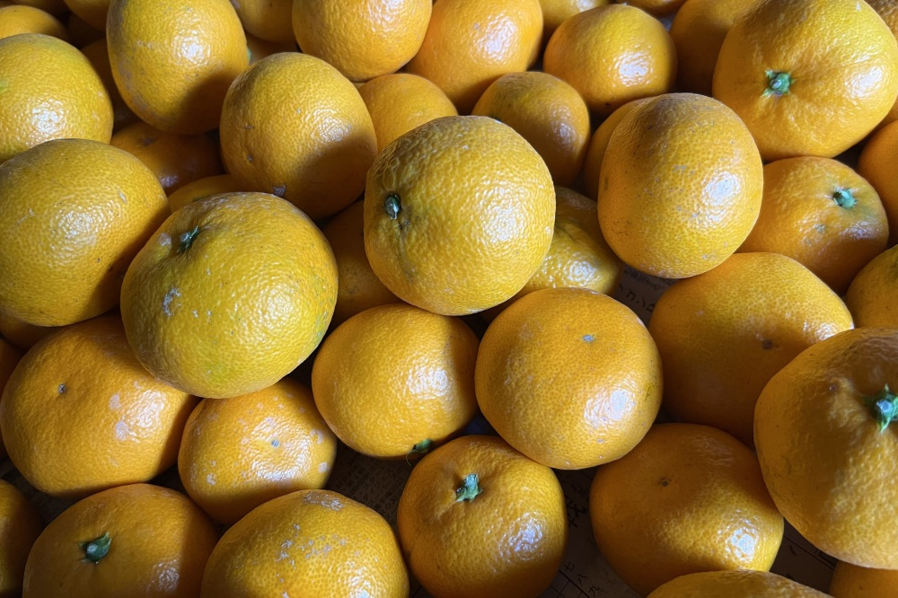
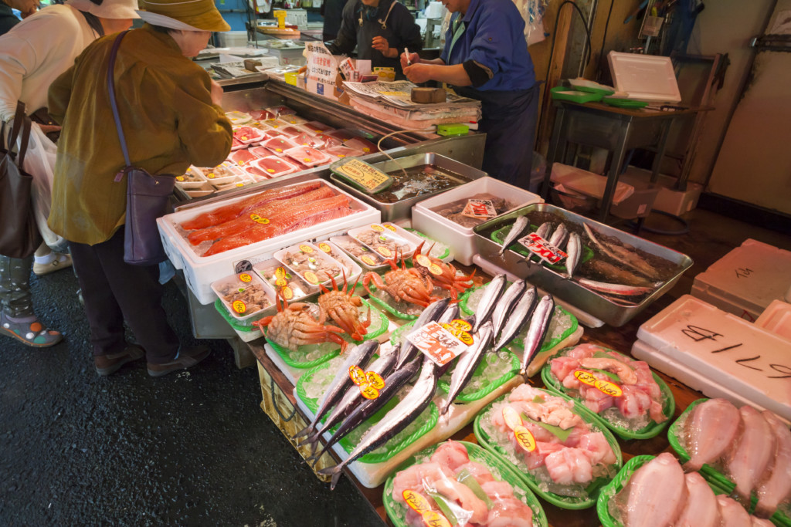

返礼品の選び方と、寄附の上限を数字で確かめる。
ふるさと納税の返礼品の選び方、控除上限額の目安、制度の変更点、手続きの期限を、一次情報で確認して整理するメディアです。感覚ではなく、計算式と前提から判断できる材料を置きます。
上限額の目安（年収500万円・独身）
約61,000円
上限額の目安（年収700万円・独身）
約108,000円
ワンストップ特例の申請期限
翌年1月10日必着
目安シミュレーターを使う（年収帯と家族構成を選ぶだけの簡易版です）
このサイトはアフィリエイトプログラムを利用する場合があります。広告を含む記事には「PR」と明記します。方針は運営者情報と広告・編集方針をご覧ください。このサイトは税務の個別相談を行うものではありません。
このサイトでやること
ふるさと納税は、制度の条件と期限を外すと、控除を受けられない寄附になってしまいます。逆に、派手な宣伝文句に引っ張られて上限を超えるのも損です。このサイトでは、次の3つだけを扱います。
1. 制度変更の確認
総務省の基準や手続きの変更を、公式情報で確認します。
2. 控除上限額の目安
年収帯と家族構成から、上限額の目安を計算式と前提つきで出します。
3. 期限の管理
年末の寄附期限、ワンストップ特例の申請期限など、外すと控除を失う期限を整理します。
記事

ふるさと納税のポイント付与は2025年10月に終了した — 現在のルール確認 仲介サイトのポイント付与が禁止された経緯と、寄附先の選び方で何が変わったかを公式情報で確認しました。 制度確認｜2026年11月6日
控除上限額の仕組み — なぜ「年収だけ」では決まらないのか 控除は所得税分・住民税基本分・住民税特例分の3つでできています。特例分の上限が「所得割額の2割」であることから、上限額の決まり方を整理します。 費用試算｜2026年11月6日 ワンストップ特例の申請期限と、年末の寄附で気をつけること 申請書は寄附した翌年の1月10日必着です。5自治体の条件、確定申告をすると特例が使えなくなる点など、期限まわりの確認事項をまとめました。 期限と手続き｜2026年11月6日 ふるさと納税の年末チェックリスト — 12月31日までに確認する7項目 上限額の最終確認、残り枠の計算、寄附日の扱い、ワンストップ特例の申請期限まで、年末に確認する7項目をまとめました。 期限と手続き｜2026年11月9日 控除上限額の早見表（年収・家族構成別） 年収と家族構成から上限額の目安を引ける一覧表です。計算ツール
控除上限額の目安シミュレーター 給与収入の年収帯と家族構成を選ぶだけの簡易版です。計算の前提と対象外の要素を明示しています。制度変更アラート（無料）
ふるさと納税のルールや控除上限の計算方法に変更があったとき、メールでお知らせします。登録フォーム（運営：globe Entertainment）